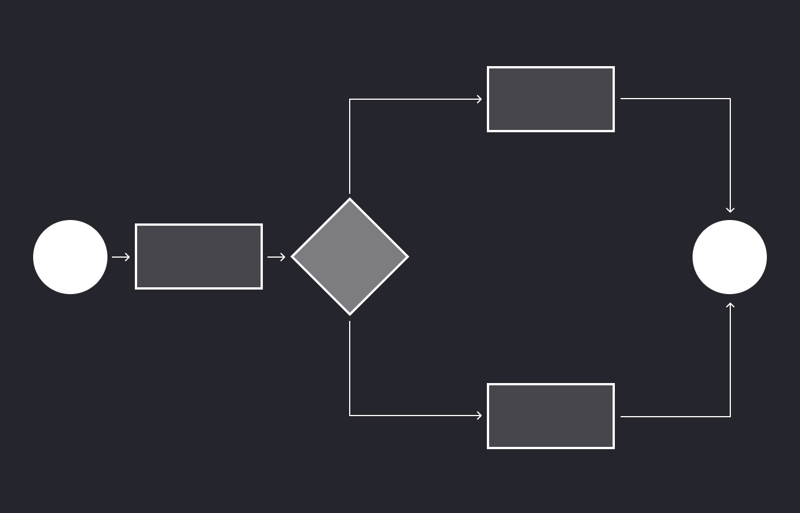
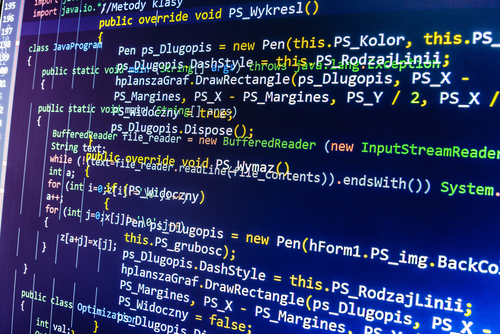

En matemáticas, lógica, ciencias de la computación y disciplinas relacionadas,
un algoritmo es un conjunto de instrucciones o reglas definidas y no-ambiguas,
ordenadas y finitas que permite, típicamente, solucionar un problema, realizar
un cómputo, procesar datos y llevar a cabo otras tareas o actividades. Dados un
estado inicial y una entrada, siguiendo los pasos sucesivos se llega a un estado
final y se obtiene una solución. Los algoritmos son el objeto de estudio de la algoritmia.
En la vida cotidiana, se emplean algoritmos frecuentemente para resolver problemas
determinados. Algunos ejemplos son los manuales de usuario, que muestran algoritmos para
usar un aparato, o las instrucciones que recibe un trabajador de su patrón. Algunos ejemplos
en matemática son el algoritmo de multiplicación, para calcular el producto, el algoritmo
de la división para calcular el cociente de dos números, el algoritmo de Euclides para
obtener el máximo común divisor de dos enteros positivos, o el método de Gauss para resolver
un sistema de ecuaciones lineales. para saber sobre nestros cursos de algoritmos precione aquí
Otra noción básica... diagramas de flujo.
El diagrama de flujo o flujograma o diagrama de actividades es la representación gráfica de un
algoritmo o proceso. Se utiliza en disciplinas como programación, economía, procesos industriales y psicología cognitiva.
En Lenguaje Unificado de Modelado (UML), es un diagrama de actividades que representa los flujos de trabajo paso a paso.
Un diagrama de actividades muestra el flujo de control general.
En SysML el diagrama ha sido extendido para indicar flujos entre pasos que mueven elementos físicos (p. ej., gasolina) o energía
(p. ej., presión). Los cambios adicionales permiten al diagrama soportar mejor flujos de comportamiento y datos continuos.
Para mas informático sobre nuestros cursos precione aquí

¿Qué es un programa?
Un programa informático o programa de computadora es una secuencia de instrucciones, escritas para realizar una tarea específica
en un computador. Este dispositivo requiere programas para funcionar, por lo general, ejecutando las instrucciones del programa
en un procesador central.

Lnguajes de programación.
Un lenguaje de programación es un lenguaje formal (o artificial, es decir, un lenguaje con reglas gramaticales bien definidas)
que le proporciona a una persona, en este caso el programador, la capacidad de escribir (o programar) una serie de instrucciones
o secuencias de órdenes en forma de algoritmos con el fin de controlar el comportamiento físico o lógico de un sistema
informático, de manera que se puedan obtener diversas clases de datos o ejecutar determinadas tareas. A todo este conjunto
de órdenes escritas mediante un lenguaje de programación se le denomina programa informático.
Hablemos de C
C es un lenguaje de programación de propósito general originalmente desarrollado por Dennis Ritchie entre 1969 y 1972
en los Laboratorios Bell, como evolución del anterior lenguaje B, a su vez basado en BCPL.Al igual que B, es un
lenguaje orientado a la implementación de sistemas operativos, concretamente Unix.
En Init contamos con uno de los mejores cursos de programacion en C. Para acceder a hacé hacé click aquí